FOREST AND WILDLIFE RESOURCES
Our earth has immense biodiversity. We share this planet with millions of other living beings, starting from micro-organisms and bacteria, lichens to banyan trees, elephants and blue whales. India is one of th world's richest countries in terms of its vast array of biological diversity. These diverse flora and fauna are so well integrated in our daily life that we take these for granted.
Some estimates show that at least 10 percent of India's recorded wild flora and 20 percent of its mammals are on threatened list. Many of these would now be categorised as 'critical', that is on the vergeof extinction like the cheetah, pink-headed duck, mountain quail, forest spotted owlet, and plants like madhuca insignis and hubbardia heptaneuron. In fact no one can say that how many species may already have been lost.
Different categories of existing plants and animal species:
NORMAL SPECIES
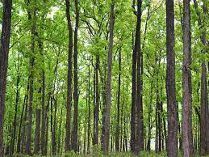
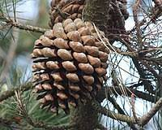
ENDANGERED SPECIES
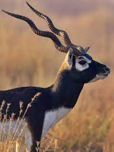
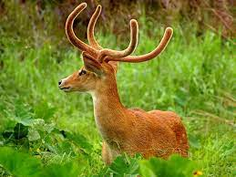
VULNERABLE SPECIES
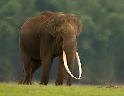
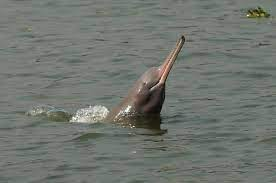
RARE SPECIES
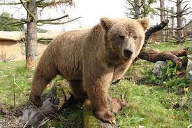
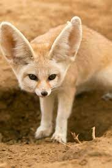
ENDEMIC SPECIES
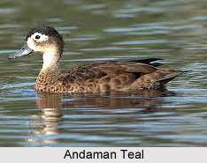
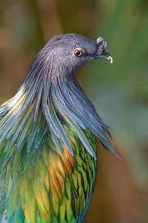
EXTINCT SPECIES
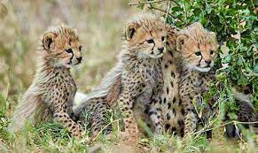
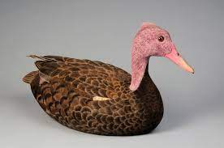
Depletion of forests
The forest policies introduced by British have led to a great loss of flora and fauna in India. The other factors for this loss are agricultural expansion, large scale developmental projects, mining activities, human and natural factors.
Conservation of Forest and Wildlife in India
Our government has taken various steps for conservation of flora and fauna and has launched many projects. But we as citizens should also be consious about the importance of forests and wildlife. Felling of trees, grazing, hunting, poaching are strictly prohibited.
Our earth has enough resources to satisfy everbody's needs but not anyone's greed